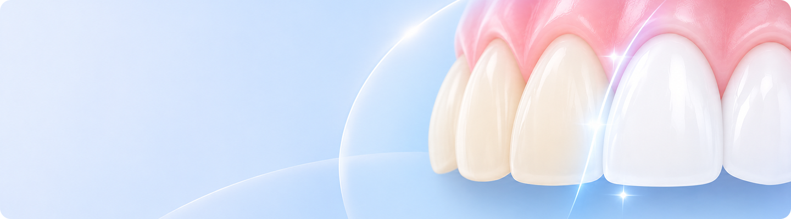

치아미백란?
치아의 모양이나 배열을 바꾸는 치료가 아니라 치아 색조만 개선하는 심미 치료입니다.
치아 미백은 착색 또는 변색된 치아를 미백제를 사용해 원래의 색 또는 그보다 희고 밝게 만드는 치료입니다.

치아의 색상을 밝게 개선해
한층 환한 미소를 만드는 데 도움을 줍니다.
이런경우 치아미백를 고려할 수 있어요
- 노화로 치아가 노랗게 변한 분
- 커피, 담배 등으로 치아가 착색된 분
- 선천적으로 치아 색이 어두운 분
- 보다 밝은 치아 색상을 원하는 분
치아미백 치료과정
-
- 변색 원인 확인
- 변색 원인을 확인하고, 문제가 없는지
점검합니다.
-

- 치아 표면 정리
- 치아 표면을 정리하고
미백제를 고르게 닿도록 합니다.
-
- 주변 조직 보호
- 주변에 미백제가 닿지 않도록
보호제를 바릅니다.
-
- 미백제 포도
- 치아 표면에 미백제를
고르게 바릅니다.
-
- 미백 활성화
- 미백 전용 광선을 쬐어치아 속
착색 물질을 분해합니다.
-

- 마무리 관리
- 치료 후 색조 변화를
확인합니다.
-
- 치아 표면 정리
- 치아 표면을 정리하고
미백제를 고르게 닿도록 합니다.
-
- 마무리 관리
- 치료 후 색조 변화를,
확인합니다.
※ 치료 과정과 소요 기간은 개인의 치아 상태에 따라 달라질 수 있습니다.
치아미백 치료 후 주의 사항
-
- 01 색소가 강한 음식 주의
- 치료 후 2~3일 동안은 커피, 홍차, 콜라 등 착색을 유발할 수 있는 음료를 가급적 피해주세요.
- 02 흡연 줄이기
- 커피, 차, 흡연 등은 재착색에 영향을 줄 수 있으며
미백 효과와 유지 기간에는 개인차가 있습니다.
- 03 치아 자극 줄이기
- 치료 후 일시적으로 치아가 시리거나
잇몸에 자극이 나타날 수 있습니다.
- 04 수술 부위 청결 유지
- 수술 부위를 혀나 손가락으로 만지지 마세요.